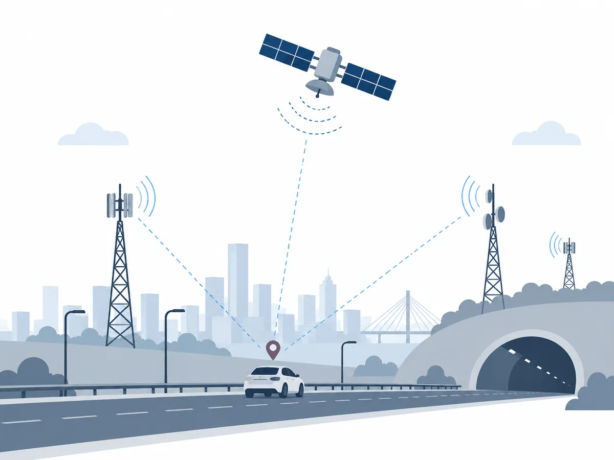

YERKON
YERKON is a ground-based positioning layer for roads that does not depend on satellites: when GNSS is lost it gives the position, and while GNSS works it checks the position GNSS gives. Low cost broadcast units go onto masts and cabinets already standing by the road, and the receiver in a vehicle works out its own position by measuring its distance to them.
Project document, in Turkish: YERKON report (PDF, 20 pages)

The three rows the simulation filled. Each shows the horizontal error that 95 per cent of the measurements stayed under, and each was run over real ground near Ankara.
What it proposes
The Ministry of Transport and Infrastructure already has points on the power and communications network: intelligent transport cabinets, roadside units, traffic lights, tunnel lighting and toll gates. YERKON adds a low cost radio broadcast unit to those points. The unit broadcasts its identity and the position surveyed when it was installed. Where those points are sparse, the other poles along the road are used: in the simulation, lighting columns in town and mostly electricity distribution poles in open country.
A broadcast unit costs roughly 1.400 lira at a thousand units, box, printed board, assembly and soldering included. The aim is to reuse the power and communications already standing at intelligent transport points, and that is what keeps the cost down.
YERKON is not only a backup that takes over when GNSS is lost; while GNSS works, it is an independent layer that checks it. The receiver keeps comparing the position from the satellites with the position from YERKON, and when the two part ways, jamming or spoofing is caught.
Who it serves
- Emergency services and disasters. Ambulance and disaster teams stay visible in tunnels, indoors, between tall buildings and in disaster areas.
- Road, freight and public transport. Public vehicles, buses and dangerous goods carriers gain a second way of being tracked that does not depend on the satellites.
- Tunnels. Position carries on where the satellites cannot reach; the best place for a first deployment.
- A map of jamming and spoofing. When the satellite position and YERKON's part ways, the event goes to the centre, and the Ministry gets a map of such events across the country.
Where the project stands
- Done: the simulation. Urban, rural and tunnel, over real ground near Ankara; the results are on the Comparison page.
- Done: design and cost. The parts list of the broadcast unit and the receivers, their prices at a thousand, and the regulatory review.
- Next: trials on the team's own hardware. Communication, coverage, positioning and signing logic get tried on devices the team already has.
- Then: a corridor of 10 to 15 units. Once the project's own boards are made, 10 to 15 broadcast units go up along a chosen transport corridor.
- Not yet done: field measurement. The accuracy and coverage figures on this site are simulation results.
Pages
Team and contact
The simulation's code and method: GitHub